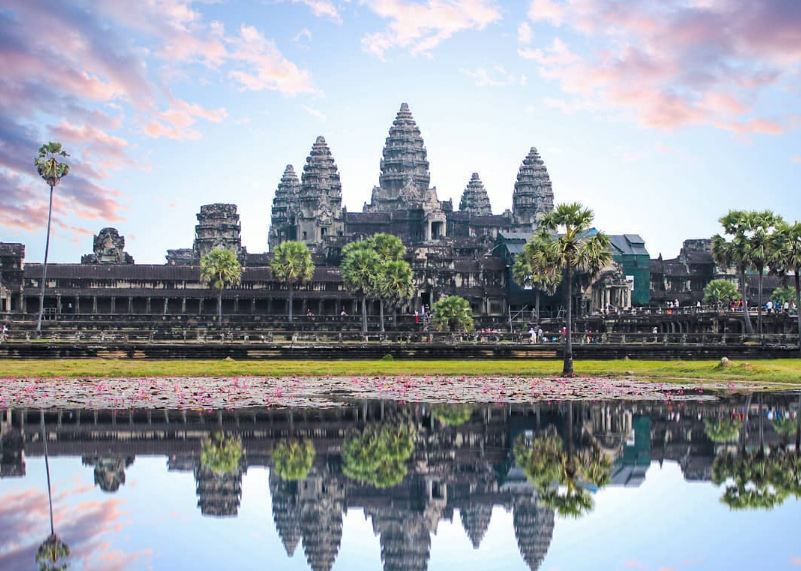
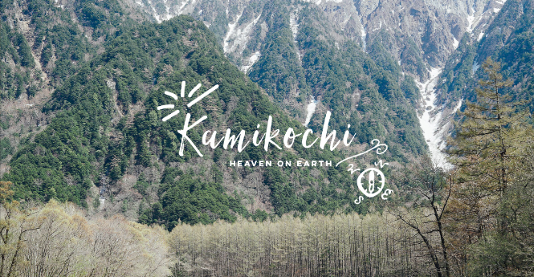
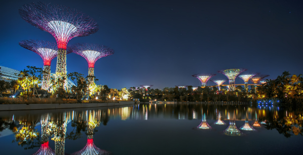
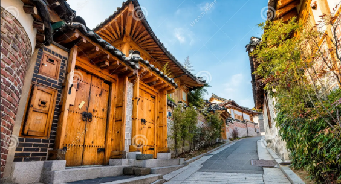
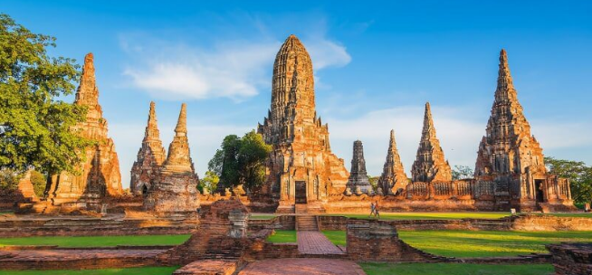
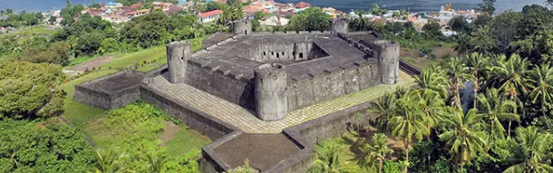

Kamboja - Angkor Wat
Angkor Wat adalah kuil kuno yang megah dan merupakan monumen keagamaan terbesar di dunia.
Berlokasi di Siem Reap, Kamboja, Angkor Wat dibangun pada abad ke-12 sebagai kuil Hindu dan kemudian diubah menjadi kuil Buddha.
Bangunan ini terkenal dengan arsitekturnya yang luar biasa dan ukiran-ukiran detail yang menceritakan kisah-kisah kuno.
Angkor Wat adalah simbol kebanggaan nasional Kamboja dan ditetapkan sebagai Situs Warisan Dunia UNESCO.

Jepang - Kamikochi
Kamikochi adalah sebuah lembah dataran tinggi yang indah di Taman Nasional Chubu Sangaku, Jepang.
Lembah ini terkenal sebagai salah satu destinasi alam paling spektakuler di negara tersebut, sering dijuluki "Pegunungan Alpen Jepang".
Pemandangan di Kamikochi sangat menawan, dengan pegunungan yang megah, sungai yang sangat jernih, dan hutan yang rimbun. Keindahan alamnya dijaga dengan ketat, sehingga mobil pribadi dilarang masuk dan pengunjung harus menggunakan transportasi umum.

Singapura - Garden By The Bay
Gardens by the Bay adalah sebuah taman futuristik dan menakjubkan di Singapura. Tempat ini terkenal dengan struktur pohon raksasa yang disebut Supertrees,
dua konservatori kaca besar yang berisi beragam tanaman dari seluruh dunia, dan pertunjukan cahaya yang spektakuler.
Taman ini bukan hanya tempat wisata, tetapi juga contoh bagaimana alam dan teknologi dapat menyatu untuk menciptakan lingkungan perkotaan yang indah dan berkelanjutan.

Korea - Bukchon Hanok
Bukchon Hanok Village adalah sebuah desa tradisional Korea yang terletak di antara dua istana besar di Seoul, yaitu Gyeongbokgung dan Changdeokgung.
Desa ini terkenal karena memiliki ratusan rumah tradisional Korea (hanok) yang masih dihuni. Bukchon Hanok bukan museum; ini adalah lingkungan tempat tinggal yang aktif,
di mana pengunjung bisa berjalan-jalan di gang-gang sempit yang menawan untuk mengagumi arsitektur tradisional dan merasakan suasana Seoul di masa lalu.

Thailand - Phra-Nakhon-Si-Ayutthaya
Phra Nakhon Si Ayutthaya adalah sebuah kota bersejarah di Thailand, yang pernah menjadi ibu kota Kerajaan Ayutthaya selama lebih dari 400 tahun.
Kota ini terkenal dengan reruntuhan kuil-kuil kuno yang megah dan istana-istana yang dulunya merupakan pusat kekuasaan dan perdagangan di Asia Tenggara. Meskipun banyak bangunannya hancur, sisa-sisa reruntuhan ini masih menunjukkan kemegahan dan keagungan masa lalu.
Kini, Ayutthaya adalah Situs Warisan Dunia UNESCO dan menjadi destinasi wisata populer bagi mereka yang ingin melihat sejarah dan arsitektur Thailand kuno.

Indonesia - Bandar neira
Banda Neira adalah sebuah pulau kecil yang sangat bersejarah di Kepulauan Banda, Provinsi Maluku, Indonesia.
Pulau ini terkenal karena sejarahnya yang sangat penting dalam perdagangan rempah-rempah global. Pada masa lalu, Banda Neira adalah satu-satunya sumber rempah pala di dunia, yang membuatnya menjadi target utama bangsa Eropa seperti Portugis, Belanda, dan Inggris.
Saat ini, Banda Neira menjadi destinasi wisata yang menawarkan kombinasi antara keindahan alam bawah laut yang luar biasa untuk menyelam, peninggalan sejarah kolonial, dan pemandangan gunung berapi yang ikonik.

China - Tibet
Tibet adalah sebuah wilayah dataran tinggi di Asia Tengah yang terletak di utara pegunungan Himalaya.
Wilayah ini dikenal dengan sebutan "Atap Dunia" karena ketinggiannya yang ekstrem. Tibet memiliki warisan budaya dan spiritual yang sangat kaya,
dengan ajaran Buddhisme Tibet yang mendominasi kehidupan masyarakatnya. Wilayah ini dipimpin secara spiritual oleh Dalai Lama.
Lansekap Tibet sangat unik dan dramatis, terdiri dari pegunungan yang tertutup salju, danau-danau suci yang membeku, dan dataran tinggi yang luas.
Meskipun menjadi bagian dari Tiongkok, Tibet tetap mempertahankan identitas budaya dan spiritualnya yang khas.